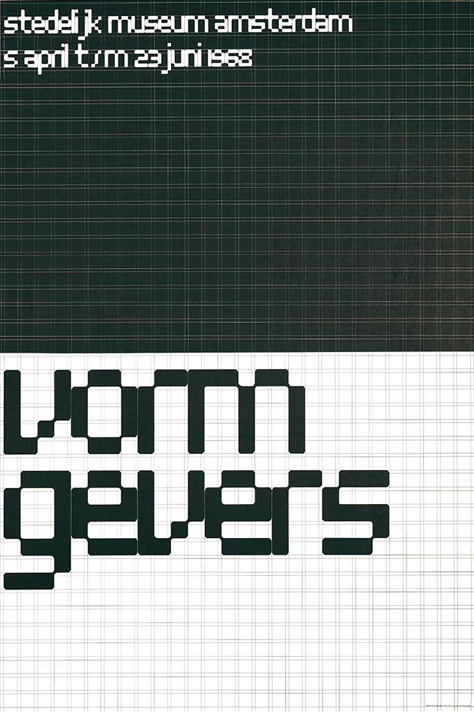
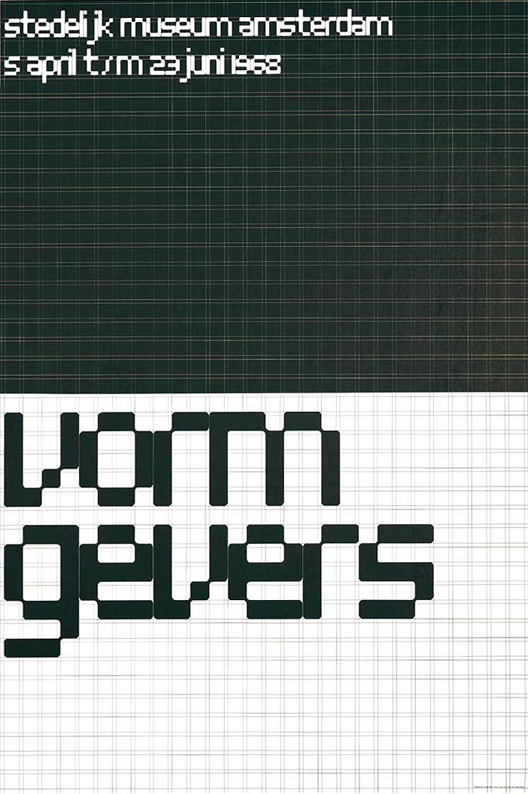

This statement was extracted from an article about the Post Modernist approach in Graphic Design. The piece argues that due to the ephemeral nature of our work in comparison to other fields such as architecture, we feel the need to add value, beyond the message we’re actually supposed to be communicating. Due to the ever-growing amount of visual information we’re constantly smothered with, in order to truly get through to the viewing audience, we need to bring complex issues down to a personal, relatable level. But this challenges the notion of regarding the field of Graphic Design as a coherent field in the first place, if we’re constantly supposed to dive into unknown fields and specializations.
This exact dilemma was discussed by two predominating yet polarised figures, Wim Crouwel (1928) and Jan van Toorn (1932) in a public debate. It took place in 1972 at the Stedelijk Museum, Amsterdam and the arguments that surfaced still have a presence in today’s Graphic Design environment. Crouwel mentions the way that he approached his students:
“Mensen, stel je vooral goed voor ogen waar je mee bezig bent. En als je dat niet kunt rijmen met wat je aan het doen bent, stap er dan nu uit en ga dan liever politicologie studeren of filosofie of psychologie; of ga de politiek in, want van daaruit heb je veel meer greep op de mens en kun je sneller bereiken wat je wilt dan via onze discipline.”2
This passage suggests that Crouwel believed that the students that had the intention to become activist or political designers would be much better off if they left the Graphic Design profession. They, and their message, would be able to engage with a much larger audience by specialising in politics or psychology rather than Graphic Design. If we take a moment to relate back to the beginning of this text, we can see that this view is in contrast to that currently espoused at the Royal Academy of Art situated in The Hague.
Before going any further, it’s important to clarify an assumption of this thesis. This thesis uses examples and makes claims based on the assumption that the intention of the Graphic Designer is to be heard, to create a connection with the viewer, as opposed to the Graphic Designers of this day and age who blur the borders between their field and that of Fine Arts. Similarly, Graphic Design and Visual Communication are used interchangeably to express two different means. The former has gained so many associations and new branches that when referring to it, one must elaborate on which area or characteristic they are actually referring to. On the other hand, Visual Communication is a much more goal-oriented formulation. The purpose of the design is to communicate successfully, something that unfortunately can no longer be said about all Graphic Designers today. Furthermore, definitions of objectivity in regard to Graphic Design are bound to vary across cultures. Keeping this in mind, this thesis primarily considers methodologies and perspectives of a Western European origin.
2
OBJECTIVITY
2.1
INTRODUCTION
Objectivity can be defined as the conscious decision to exclude (personal or collective) bias. In Graphic Design terms, objectivity is the act of excluding one’s intuition during the working process and eventual result. Which Graphic Design methodologies originate from such a framework? Which Graphic Designers have implemented such a methodology? What criteria must be followed for the piece of Visual Communication to be as objective as possible?
2.2
METHODOLOGIES
BAUHAUS
“Form follows function.” [In an ideal world, in any way.] This was the philosophy of a school in three German cities. When literally translated, it results in ‘architecture house’. Founded by Walter Gropius, the Bauhaus schools developed the foundation of Graphic Design as an academic discipline. After the Arts and Crafts Movement and the Industrial Revolution, it was time to create a visual identity that stemmed from a non-sentimental approach. There was a collective will to decrease the clutter and excess in daily life. There was no need for decorative pieces for the Upper Class; rather, good design should be accessible for people from all walks of life. (See images.)
In terms of daily life, one can argue that the Bauhaus mentality spread through many areas of design. Architecture, product design and graphic design were to get an upgrade that was appropriate for the anything-but-temporary modernized/mechanized society. This new environment was in dire need of Visual Communication to access the public audience. The way that objectivity manifested itself in this movement went hand-in-hand with the photographic advances of the time. Multiple member of the Bauhaus claimed that photography was an objective method to portray information, as it literally captures what is there, seemingly without any kind of human interception. One of the movement’s foremost members was Laszlo Moholy-Nagy, who felt that the way people dealt with typography needed attention, too.
“[Typography] must be communication in its most intense form. The emphasis must be on absolute clarity… Legibility—communication must never be impaired by a priori aesthetics.”3
This mentality strived to stray from the ornamental characteristics of the typography from the Art Nouveau age, resulting in innovations in type design, such as the “Universal Alphabet” (1925). Designed by Herbert Bayer (AUT, US), the typeface intended to accentuate only the core differences between the letter shapes to improve legibility.4 Its name and purpose supports the Bauhaus desire to create forms following a functional purpose, as opposed to including the personality of the individual Graphic Designer.
Jan Tschichold’s ‘Neue Typographie’ proposed an asymmetrical layout for his colleagues in the field. This work tries to make the statement that if the form simply follows its function, this focus could detract from the very content of the message. This creates a very interesting tension with regard to the rules in practice at the time. One can argue that the rules were put into place with the intention to be ideal and optimal for understanding the message. But Tschichold argues that “symmetrical organization was artificial because it placed pure form before the meaning of the words,” 5 creating a complete divide and contradiction to the aforementioned intention. (See Image.) Paradoxically, that which was thought to be objective and practical turned out to be subjective and obstructive.
FUNCTIONALISM
During the research phase of this project, texts often referred to the Graphic Designer—sometimes even exclusively— as a ‘functionalist’. Functionalism is most simply understood as a no-nonsense methodology. When working in a functional manner, the goal is to make all decisions based on what facilitates the reception of a message as much as possible. Even those who have reacted against functionalism, including the self-proclaimed Dialogist, Jan van Toorn (NL), have admitted that their work at times draws from a Functionalist perspective depending on the brief in question.
“Functionalism sees the design process as instrumental; […] information is passed on transparently and is given form on the basis of analysis of function. Convinced that technology and form can be deployed in a value-free way, it adopts a rational design methodology based on a linear view of communication.”6
This excerpt was taken from a text co-authored by Jan van Toorn and Els Kuijpers, the curator selected for a showcase of van Toorn’s work at the Van Abbemuseum in Eindhoven. Kuijper’s work as a curator, writer and educator provided her with the necessary insight to formulate the following compilations. The Functionalism section was written in relation to four other texts —‘Formalism, Informalism, Productivism, and Dialogism’— the last of which will be referred to in the following chapter on subjectivity. Adjacent to the specific ‘ism’s’, a small range of photos was provided in order to further explain the content.
As far as Functionalism is concerned, if it doesn’t have a purpose or a function, it most likely doesn’t need to exist. Otherwise the line could be crossed into one of the other terrains of thought. One example could be the work of Paul Rand(US). Internationally renowned for his uncomplicated logo designs and corporate identities, he talked about the balance between ‘The Beautiful and The Useful,’ one of many essays in the book ‘Thoughts on Design’ (1947) discussing a prominent designer from the United States. Rand suggests that “Graphic design—is not good design if it does not co-operate as an instrument in the service of communication.” 7 Rand is known as one of the first American designers to implement the values of Modernist designers in Western Europe in a hyper-Capitalist culture. This statement basically suggests that in order to be graphic design of quality it must not stray from its purpose: to communicate something.
“The need for communicative efficiency is a response to the main reason for the existence of any piece of graphic design: someone has something to communicate to someone else.”8
This fragment comes from an article whose title itself is worth writing an entire thesis on, “Graphic Design: Fine Art or Social Science?” Its writer, Jorge Frascara, has a very fascinating take on the history and future of Graphic Design. It is very evident, during the beginning section, that he agrees with individuals who dabble in Graphic Design such as El Lissitzky and Josef Albers.
“Advertising design is expected to make people buy products or services; political or ideological propaganda is expected to affect people’s beliefs and actions; regulatory signs on highways are intended to organize the flow of traffic; teaching aids are supposed to improve learning performance; bank notes are designed to make forgery difficult and identification of one denomination from another easy.”9
Separating Graphic Design into different categories can be done in a multitude of ways. Frascara chooses to do this in a very Functionalist manner. The method he has chosen is one that might not be agreed with by Graphic Designers in this decade, as it is objective-oriented.
It can be argued that the objective is what generates the existence of the Graphic Design, not a feeling, or an urge, or the will to make something beautiful or moving. It must pertain to a function. It must facilitate, as opposed to making something more complicated. There are those that even believe that there are ways to create systems that can exude the same impression, depending on what the brief is, in order to bring about neutrality and clarity.
MODERNISM
After World War II, new kinds of communication needed to be created in order to support the amount of messages that were introduced. For example, messages that were to be sent from companies to potential buyers needed to be circulated in a comprehensive manner. There were those that believed that a new visual language had the power to create unity within the sea of diverse messages and they referred to themselves as the Modernists.
A great example of Visual Communication’s need to stand out could, until today, be found in the London Underground. (See images.) There were too many posters arising from all sorts of origins that shouted at the viewers making it a challenge for a signage system to receive any notice. Frank Pick was appointed to consider the publicity department of the London Underground. He eventually went on to commission Edward Johnston (UK) to improve the legibility of the logo’s typography. The brief was to create a “typeface possessing the bold simplicity shown by distinctive letters from preceding epochs, but with an indisputably twentieth-century quality.” 10 Johnston’s reaction was to “[seek] absolute functional clarity by reducing his characters to the simplest possible forms.”11 It can be argued that this logo’s presence was a success, due to the fact that not much has happened to the design since its upgrade and that it remains an iconic manifestation of Great British culture. Now that one very familiar and recognizable case has been brought to light, it is of essence to take a closer look at the broader picture.
There is many a designer that contributed to the strict Modernist black and white, grid-like design approach that students and designers can easily name nowadays as a reference. Additionally, if one were to look back on an individual who has, on multiple occasions, alluded to himself as an objective designer, the name Wim Crouwel would definitely surface. “The task of the designer consists of analysing the design project and solving the problems he distilled in an objective way. The message and the way it should be presented flows out of this process.” 12 Working based on a set of rules and restrictions and most definitely a grid, Crouwel has often referred to his own work as that of an objective nature. A grid is a mathematically calculated set of rules into which any kind of content can be filled. For example, if the ‘research’ Crouwel refers to demands the use of photography, the dimensions of the photographs are noted and the grid is constructed based on that ratio. Using a grid provides a harmonious structure, as it is an aid to keep typography sizes proportionate to each other and deliver consistency throughout the entire design. As a grid is calculated and after the point of its creation, is no longer diverged from, it inhibits the Communicator from making random decisions in their composition based on intuition. However, the Designer still has the choice to decide which information fits into which area of the grid. When Crouwel worked for the Van Abbemuseum in Eindhoven, he would work for the museum’s interests, never making what may have been considered the mistake of portraying his own interpretation of the work of the artist on exhibit. He was fully aware of the commissioner who had hired him and the fact that his own deductions had no place while relaying their message. His next commissioner would be the Stedelijk Museum in Amsterdam where he would, as at the Van Abbemuseum, employ one single typeface, the Univers, a prominent typeface within the Modernist scene (See image.). The title of the exhibition was the only element on the entire 2D surface that consisted of some kind of interpretation made by Crouwel. After studying the work of the artist, he created a typographic composition consisting of rarely more than one word. (See images.)
“During the early 1950s […] Crouwel’s design philosophy was less emphatic about universal form and standardized formats; he emphasized the designer as an objective problem solver who finds solutions through research and analysis, simplifying the message and the means for conveying it to an audience. He believed the flood of typographic messages in contemporary society demanded clarity and simplicity.”13
The above perspective is one that could be stem from modern-day practice. Due to extreme developments in both technology and, as a result, our means to communicate, this “flood” has multiplied infinitely. Therefore the quality of typographic messages must be relentless and always attempt to withstand the visual chaos.
INTERNATIONAL
TYPOGRAPHIC STYLE
While evaluating multiple individuals whose will was to achieve objective designs, it could be of importance to see how they thought they could do so in practice. Some very recognizable objectivist design tendencies can be seen in the International Typographic Style. This specific movement materialised foremost in Switzerland and Germany during the early 1950s, and is also widely recognized as the Swiss Style.14 It tried to set itself apart from the commercial and politically infused visual culture at the time and more importantly, involved a more scientific rather than personal approach.
Visual order was the goal and as the Swiss Style movement developed, so did their techniques. Mathematical grids built from horizontal and vertical planes were carefully filled with texts meant to be as accessible as possible. Typefaces that were sans serif and grotesque were set left aligned, and ragged on the right side, in favour of legibility and readability. A famous member of this movement even taught his students that “type loses its purpose when it loses its communicative meaning; therefore legibility and readability are dominant concerns.” 15 Whether or not the specific set of rules (the use of sans-serif, left-flushed type) were the most ideal is questionable, but the fact that multiple Visual Communicators and educational institutions agreed upon them simultaneously is telling of their wide acceptance. This allowed for unity and continuity, which was believed to be lacking in the visual environment at the time.
If we look at the work of Josef Müller-Brockmann, for example, we see work that could have been made in this age. An over-visualized society that is filled with messages trying to communicate more than we could grasp and are forced to filter through continuously is one we still experience. Müller-Brockmann’s design solutions under the Swiss Style name crossed national borders and infiltrated design scenes across Western Europe. “The withdrawal of the personality of the designer behind the idea, the themes, the enterprise, or the product is what the best minds are all striving to achieve”.16 (See images.)
2.3
CURRENT CONCLUSION
From these examples, we can see not only those who advocated an objectivist approach for Graphic Designers, but also their evaluation criteria for what constitutes good Graphic Design and the methodology that helped them to meet this goal. After sifting through the rich line of Graphic Designers that contributed to the construction of the goal to be objective, it is time to take some distance and attempt to understand the other side of the coin: the subjective approach. Indeed, it can be argued that in reality these two principles are seamlessly intertwined; they are inevitably interdependent. Importantly, some argue that this can only improve the communication of a message from the commissioner to the designer to the eventual audience. However, we will see in the next chapter on subjectivity that this line of communication need not be so linear and need not stop there. Additionally, within the subjective approach, the audience has a much more important role: they are more than purely ‘a receiver’, the way they were considered by the previously mentioned mound of objective, neutralised, removed, designers. So, what does that do to the meaning of objectivity?
2.4
IMAGES
Miljoenennota pamphlet by Inês da Costa
for Royal Academy of Art (KABK), The Hague, 2013.
Book cover by unknown artist
for Johannes Itten’s Die Farbe, 1944.

Poster by unknown artist
for Staatliches Bauhaus Austellung, 1923.
Die Neue Typographie by Jan Tschichold for Verlag
des Bildungsverbandes der Deutschen Buchdrucker, 1928.
Die Neue Typographie by Jan Tschichold for Verlag
des Bildungsverbandes der Deutschen Buchdrucker, 1928.
Poster by Jan Tschichold
for Kunsthalle Basel, 1937.
IBM logo by Paul Rand for IBM, 1956.
London Underground logo by Edward Johnston
for London Underground, .

Vormgevers poster by Wim Crouwel
for the Stedelijk Museum Amsterdam, 1968.
Vormgevers poster by Wim Crouwel
for the Stedelijk Museum Amsterdam, 1968.
Legér poster by Wim Crouwel
for Stedelijk Museum Amsterdam, 1957.

Het Nederlandse Affiche, 1890-1968 poster
by Wim Crouwel for Museum Fodor Amsterdam, 1968.

Beethoven poster by Josef Müller-Brockmann
for Zürich Town Hall, 1955.
Strawinsky Berg Fortner poster by Josef
Müller-Brockmann for Zürich Town Hall, 1955.
Neue Haas Grotesk type specimen book
by Josef Müller-Brockmann for Haas’schen
Schriftgiesserei AG Münchenstein, 1962.
3
SUBJECTIVITY
Just as there are those that believe that form follows function, there are those that believe that Graphic Design should be created from the will to engage with the receiving party. To elaborate, this desire is not solely to engage, but to alert, to intrigue, to excite, and to question what is being discussed. In order to do so, more often than not, the way that the content is formatted or portrayed is approached from a much more intuitive, associative perspective. The use of images (photographs, illustrations, etc) is a way of strengthening the message, and of eliciting from the audience a large variety of interpretations as opposed to few, objective ones.

GESTALT THEORY
BACKGROUND
 When looking at how we perceive images, one could refer to the Gestalt Principles to understand a little more about the ways in which the viewer, the receiving party, would be looking at visual messages. These principles are derived from Gestalt theory, which was thought of by early 20th century philosopher Christian von Ehrenfels and psychiatrist Max Wertheimer.17 Their conclusions provide a reliable and rich foundation for this specific research: they considered how the human mind perceives all sorts of visual information. If one were to want to describe the Gestalt theory in one sentence, it would be easiest to quote Kurt Koffka,
When looking at how we perceive images, one could refer to the Gestalt Principles to understand a little more about the ways in which the viewer, the receiving party, would be looking at visual messages. These principles are derived from Gestalt theory, which was thought of by early 20th century philosopher Christian von Ehrenfels and psychiatrist Max Wertheimer.17 Their conclusions provide a reliable and rich foundation for this specific research: they considered how the human mind perceives all sorts of visual information. If one were to want to describe the Gestalt theory in one sentence, it would be easiest to quote Kurt Koffka, “the whole is other than the sum of the parts.”18
At first glance, we perceive one whole, and only after longer study/observation, we notice the components. ‘The Subjective Triangle’ is a perfect example of the viewer having to deal with the unavoidability of his or her own subjectivity. We are limited to our own projected conclusions. There is no triangle in the image. Yet our perception creates one out of what is available, the three incomplete circles.


Within the realm of Graphic Design, five principles of Gestalt theory can be seen as colouring our interpretation of visual information, stopping us from being able to perceive objectively. These are: the Law of Prägnanz (Law of Simplicity), Closure, Symmetry, Proximity, and Similarity.
The Law of Prägnanz (Law of Simplicity) states that we, as viewers, yearn for a simple and thus, clearer organisation of visual information. Instead of trying to understand a complex visual, we tend to break it down into simpler, more accessible forms.

When the Law of Prägnanz isn’t suitable, the viewer can create a simpler whole if the separate forms are too difficult to distinguish and identify, and this comes under the principle of Closure. The World Wildlife Fund (WWF) panda is a perfect example: it is recognized as a panda, but only after that immediate conclusion is made does one take the time to recognize the forms that create it. Next, with regard to the principle of Symmetry, “Symmetry gives us a feeling of solidity and order, which we tend to seek. It’s our nature to impose order on chaos. This principle leads us to want balance in composition, though our compositions don’t need to be perfectly symmetrical to be in balance.”19

This very interestingly ties into the research done for this thesis, as symmetry is not necessarily the ideal way to present information. This principle was encountered earlier in the discussion of Tschichold’s argument that if symmetry is sought-after, the design could become forced and the comprehension of content is no longer the priority. The principle of Proximity is simply how we understand which components are related to each other or not. The more two components relate to each other, the closer they will be placed and vice versa. The components can be identical, but once space is put in between them, we understand that they are different in some way. Finally, the principle of Similarity immediately reminds us of the Modernist ideal of creating unity while visualising information. Similarity deals with the idea that if a percentage of the content is treated in the same way, whether that is colour, size, or shape, they will be interpreted as similar. In order to create tension, components can be made dissimilar and will therefore stand out much more, thanks to the Similarity principle.
These principles of Gestalt theory influence how humans actually perceive visual information. The Modernists believed their objective way of working was the most successful, with the important limitation that they relied solely on the perspective of a Graphic Designer, the person controlling how the organisation of information was planned. In a context of over-visualised, developing surroundings, one could agree that unity, order, and minimalism are necessary. However, there are those whose goal is to engage with the viewer and not simply translate information in the most ordered fashion.

DIALOGISM

If we relate back to the five eloquently phrased ‘isms’ introduced by Els Kuijpers and Jan van Toorn in the chapter on Objectivity, we come across one that alludes to a more conversational –if you will– outcome: Dialogism. The following text is an extract from the exhibition and it’s been recorded here in its entirety because it gives us insight into how a Dialogist Designer himself (van Toorn) views his own practice.

“Dialogism sees communication as an aesthetic system and moral practice in one, in which not only utilitarian factors (material, production, function), but also politico-economic and socio-cultural aspects are involved, as well as the consequences for behaviour and use. This integral approach adopts a view of communication based on democratic reciprocity and solidarity.

The reflexive, social strategy of dialogism aims to involve spectators in the communication in a recognisable and critical manner and thus to offer them counter-images dealing with reality. The use of a stratified, pluriform use of visual language targets the full breadth of our intellectual and sensorial capacities.”20
This word, Dialogic, is one that one might automatically think they recognise, but its roots lie, in fact, in the late Russian philosopher, Mikhail Bahktin’s ‘Voprosy literatury i estetiki’ or, The Dialogic Imagination. The predecessor to this book, written alongside Fyodor Dostoyevsky, showcased Bahktin’s premise that “a mutual relation [existed] between meaning and context involving the author, the work, and the reader, each constantly affecting and influencing the others, and the whole influenced by existing political and social forces.”21
Understanding the following idea makes the repurposing of the term very legitimate and comprehensive: “Bakhtin postulated that, rather than being static, language evolves dynamically and is affected by and affects the culture that produces and uses it.”22
The word ‘language’ could very well be replaced by the words Graphic Design or Visual Communication. The latter are influenced by their environment, which was obvious to the Modernists and Bauhaus educators, but Dialogist Graphic Designers i.e. Jan van Toorn, use this idea to their advantage. Where Bakhtin’s theory stops, van Toorn’s implementation and practice, begins.23 The observation is not only made, but also used thoroughly.
What sets objective Functionalism and subjective Dialogism apart is that the Dialogist approach is a moral one and includes excess information that detracts from the primary purpose of the article of Graphic Design. In Dialogism, there is no room for objectivity, there is no desire to obtain objectivity or anything close to it, and the whole point is that the subjective voice of the Graphic Designer is trying to communicate with the subjective ear of the viewer. This departs considerably from the prime objectivist concern to get the message across in the most unadorned way possible.

‘The Debate’ (translated from the Dutch ‘Het Debat’) exposed a Jan van Toorn with complete conviction, in conversation with Wim Crouwel. Reading the transcript of their highly relevant conversation, it was quite clear that neither designer was going to give in to the arguments of the other. Imagining them speaking, one might even hear their explanations in two highly distinct voices: the sentence structure (word choice, length, repetition) within the transcript suggests the voice of Crouwel was patiently paced and structured, while that of van Toorn had much more intonation.
Wim Crouwel’s addictively strict working methods were previously discussed as attempting to create the closest connection between the message-sender and –receiver. van Toorn, however, had an idea or two of his own. In ‘The Debate’ he reacts powerfully towards Crouwel’s reluctance to inform his work with his own values or biases in the fear that it might interfere too much and therefore prohibit clear communication. This is the exact recipe for failure as far as van Toorn is concerned; the implementation of the Subjective is of utmost importance.

“Laten we het eerst even over die subjectiviteit hebben. Ik geloof dat er twee punten zijn die van belang zijn. Als er een inhoud wordt overgebracht dan is dat ontwerp op zichzelf nog niet waardevrij. Dat heeft een bepaalde inhoud, een gevoelswaarde. Het heeft kenmerken. Het heeft een duidelijk doel. Je moet iets overbrengen aan iemand. Misschien een politieke overtuiging, misschien alleen maar een verslag van een vergadering. Als je dat voor je neus krijgt dan is dat aan iemand gericht. De dubbelrol van de overbrenger, de ontwerper, is de inhoud over te brengen zonder daarop in te grijpen. Maar anderzijds is er een niet te ontlopen inbreng en een subjectiviteit van de vormgever. Dat stuk dialectiek kun je niet ontkennen en dat moet je als een voordeel zien.
Jij schrikt daarvoor terug en gebruikte het woord ‘angst’. Je wilt de inhoud en de identiteit geen schade toebrengen, waardoor je altijd op eenzelfde manier vormgeeft, ik denk tenminste dat dat in je werk zichtbaar zal zijn over een langere periode. Maar door op alle situaties eenzelfde vormantwoord te geven ontstaat er een geweldige eenvormigheid en gaat de identiteit verloren. Terwijl identiteit een van de meest wezenlijke kenmerken is van alle menselijk contact en ook voor de overdracht van welke inhoud dan ook.”24
This excerpt is presented in the original Dutch, given not only the historical weight this text has gained over the years, but also the fact that a translation would not suffice unless it was done by Jan van Toorn himself. And even then, it would be taken out of its original context (1972) and as van Toorn shows us in his exhibition at the van Abbemuseum, his work has evolved over time (mainly because he was trying to break free from his Functionalist education). In any case, he argues that content will always have a sender, a destination, and a receiver. He agrees with Crouwel that the Designer’s role is to present information, but contends that we represent no matter what. The presence of subjectivity is unavoidable. He asserts that this is actually something that one could and should use to their advantage. There is no need to stray away from submitting to subjectivity, as Crouwel, earlier on in the transcript, admits to attempt. If one tries to remove their presence too much, they run the risk of making work that repeats itself. If you remove yourself, you use rules and grids and collectively accepted systems, but because these are preempted, there is no leeway for visual versatility to grow.

CONDITIONAL DESIGN
The idea to allow and attract viewers to engage with the work can easily be perceived in contemporary Graphic Design. The Conditional Design approach posited by Luna Maurer, Edo Paulus, Jonathan Puckey and Roel Wouters is one example. As their manifesto will expand on, Conditional Design work is process-based as opposed to product-based. This creates a wonderful new kind of relationship between the maker and the viewer. (See images.) Contemporary, developed societies are capable of having a voice and presence as technology improves without pause. The Conditional Design approach could almost be seen as a metaphor for this interactivity, as it requires the input of the subjective viewer to complete the work.

The Conditional Design manifesto is as follows:
Process: The process is the product. The most important aspects of a process are time, relationship and change. The process produces formations rather than forms. We search for unexpected but correlative, emergent patterns. Even though a process has the appearance of objectivity, we realize the fact that it stems from subjective intentions.
Logic: Logic is our tool. Logic is our method for accentuating the ungraspable. A clear and logical setting emphasizes that which does not seem to fit within it. We use logic to design the conditions through which the process can take place. Design conditions using intelligible rules. Avoid arbitrary randomness. Difference should have a reason. Use rules as constraints. Constraints sharpen the perspective on the process and stimulate play within the limitations.

Input: The input is our material. Input engages logic and activates and influences the process. Input should come from our external and complex environment: nature, society and its human interactions.25
Conditional Designers use rules and constraints that are reminiscent of the rules put into place by Swiss Style designers more than half a century ago. But contrary to the latter, the former openly acknowledge the ubiquity of subjective interjection.
Their search for “correlative, emergent patterns” and “intelligible rules […] that sharpen the perspective on the process” can be examined in relation with semiotics.
SEMANTICS, SYNTACTICS,
AND PRAGMATICS
Semantics: Massimo Vignelli, the designer of the New York City Subway system and American Airlines identity, distinguishes himself as a Modernist designer. (See images.) In his book, ‘The Vignelli Canon’, he explains the importance of semiotics. Ferdinand de Saussure, a Swiss linguist provides us with valuable theory about semiotics. He saw language as such a fundamental element of human society, "[w]ithout language, thought is a vague, uncharted nebula."26

Vignelli sees semantics, which entails thorough research as to what the message means, to both the sender and the receiver of said message. Therefore, taking the context (both physical context and historical context) into consideration and establishing who the end user is, is vital.
“Design without semantics is shallow and meaningless but, unfortunately it is also ubiquitous, and that is why it is so important that young designers train themselves to start the design process in the correct way- the only way that can most enrich their design.”27
This opinionated excerpt is one that agrees with that of Crouwel, even though Vignelli is of Italian origin and built his career in the United States. This supports the claim that even though Graphic Designers may not ever be able to achieve objective designs, there does need to be a goal in place, otherwise there it will be valueless.

Syntactics: Syntactics is a play on words, derived from syntax, which is the correct structure and use of grammar within a language.
Pragmatics: “Whatever we do, if not understood, fails to communicate and is wasted effort.” 28
This quote provides us with a short and concise explanation of what pragmatics actually is. This has everything to do with how a message is understood and perceived. However, in order to truly understand the way in which the receiving party is going to interpret the information, the designer must know what kind of audience this message will have. Furthermore, he needs to relate to this audience and is incapable of doing so in an objective way, as this entire act is subjective.

“We design things which we think are semantically correct and syntactically consistent but if, at the point of fruition, no one understands the result, or the meaning of all that effort, the entire work is useless.” 29
CURRENT CONCLUSION
Objectivity is a valid desire to have as a Visual Communicator as it can make create simplicity in a complex environment. If an environment is capable of producing visualised messages, there will indefinitely be a surplus of information, and most probably a large percentage could be dismissed and omitted in the first place. However, just as with symmetry, if the goal to be objective is too prevalent, the successful communication of the specific content could suffer.

4
ASSUMPTIONS AND CONCLUSIONS
So far we’ve looked at objectivity as the standard for good Graphic Design within various Western European perspectives. We’ve evaluated the methods with which you could potentially create objective design and considered those that believe that that is an endeavour worth investigating. The research gave us enough Visual Communicators that attempted, even claimed, to work in an objective fashion.
However, even they had to admit that their personal opinion as to what objectivity meant in the first place, tampered their implementation of it.
This viewpoint was then juxtaposed with a more subjective approach, shedding light on their criteria for quality Graphic Design and the ways in which they embed this in their practice. We see that even when trying to create a situation where content is isolated and all else is excluded, that content’s position on the 2D surface is basically completely arbitrary. One mentality cannot exist without the other. These two approaches proved to be inevitably interdependent.
An interesting coincidence discovered during the research phase of this thesis was that many of the noted individuals were of a Dutch or Swiss origin. The reasoning behind the need for order in a Dutch context is discussed in ‘Meggs’ History of Graphic Design’ as follows:
“As Dutch design evolved: two strong currents became evident: a pragmatic constructivism whose inspiration derived from Dutch traditions from the first half of the century, […] as well as postwar influences from Switzerland; and a vigorous expressionism, with jolting images and spontaneous spatial syntax.
The duality is not surprising, for the Dutch are known as a thrifty people who favor order and structure; they are also broad-minded and tolerant of diverse political, religious, and artistic ideas.” 30
The purpose of Graphic Design was also discussed by distinguishing Graphic Design from Visual Communication. The intention was to illustrate a personal opinion that we have digressed completely from the former ‘boundaries’ of this field. Making the term itself lack any foundation or depth in a contemporary context, as its definition is not simple and straightforward, but rather quite complicated.
To relate back to the origin of the fascination to write this text, we see additional consequences for how we perceive the field of Graphic Design, and undoubtedly, for the guidance that is given during an education to prepare for the aforementioned field. One could argue that we find ourselves in an era wherein the Graphic Designer is not solely a ‘translator’ of information but a socially responsible activist that only uses their background as a means to express themes that need attention. When asked to wander into new specialisations and fields outside our own, we become an author, a theorist, a journalist and a designer, all in one. Along with some of these titles comes complete subjectivity. Thus answering the question as to why one’s work needs to be more than just a presentation of information, but rather a representation.
It can be argued and concluded, that, objectivity can exist only to a certain extent within the realm of Visual Communication. Furthermore, subjectivity is not the polar opposite of objectivity but they are mutually dependent. In order to construct rules or systems to abide by, the subjective interpretations viewers (are bound to) have, need to be taken into account. This automatically inhibits the ability to be objective before the process even has the chance to begin. If we speculate for a moment on the future, one could argue that new sorts of media will continue to develop at a startling rate, causing Visual Communication to do its best to fight through the noise and continue to function.
5
BIBLIOGRAPHY
1. Vignelli, M. (2010). The Vignelli Canon. (S. Hicks, Ed.) Kösel, Altusried-Krugzell, Germany: Lars Müller Publishers.
2. Bak, R., Abbês, B., Frey, J., & Sepanski, A. (2014). Perspectives on Graphic Design. (A. Rapp, Ed.) Brooklyn & Manhattan, New York, USA: Pratt Institute, Department of Graduate Communications Design.
3. Frascara, J. (1988). Graphic Design: Fine Art or Social Science? Design Issues, 5 (1), 18-29.
4. Lakoff, G., & Johnson, M. (2003). Metaphors We Live By. Chicago, USA: The University of Chicago Press.
5. Wim Crouwel. (n.d.). Retrieved 09 2014, 28, from ICONOFGRAPHICS: http://www.iconofgraphics.com/Wim-Crouwel
6. Müller-Brockmann, J., & Müller-Brockmann, S. (2004). History of the poster. (M. J. Schärer-Wynne, Trans.) Zürich, Switzerland: Phaidon Press Limited.
7. Klanten, R., Hellige, H., & Mischler, M. (Eds.). (2000). Swiss Graphic Design. (M. Robinson, Trans.) Berlin, Germany: Die Gestalten Verlag.
8. Bruinsma, M. (2008). Lovely Language - words divide, images unite. (E. Annik, Ed.) Rotterdam, The Netherlands: Veenman Drukker
9. Keedy, J. (1998). Graphic Design in the Postmodern Era. Retrieved October 12, 2014, from Emigre Essays: http://www.emigre.com/Editorial.php?sect=1&id=20
10. Müller-Brockmann, J. (2008). Grid systems in graphic design. Heiden: Niggli.
11. Design Without Boundaries: Visual Communication in Transition, Rick Poynor, Booth-Clibborn Editions, London, 1998.
12. Warde, B. (1955). The Crystal Goblet. London: Sylvan Press.
13. Huygen, F., Vrie, D., Crouwel, W., Toorn, J., Zijlstra, S., Geursen, W. and Wijgerden, W. (2008). Crouwel - van Toorn. Eindhoven: (Z)OO producties.
14. Rock, M. (2014). 2 × 4: Essay: Fuck Content. [online] 2x4.org. Available at: http://2x4.org/ideas/2/fuck-content/ [Accessed 17 Oct. 2014].
15. T-y-p-o-g-r-a-p-h-y.org, (2014). T-Y-P-O-G-R-A-P-H-Y. [online] Available at: http://www.t-y-p-o-g-r-a-p-h-y.org [Accessed 21 Oct. 2014].
16. Counterblast by Marshall McLuhan (medium is the message)
17. The Work of Art in the Age of Mechanical Reproduction by Walter Benjamin
18. Crowley, D. and Heyer, P. (1991). Communication in history. New York, N.Y.: Longman.
19. Müller-Brockmann, J. (1968). The graphic artist and his design problems. New York: Visual Communication Books.
20. Meggs, P., Purvis, A. and Meggs, P. (2006). Meggs' history of graphic design. Hoboken, N.J.: J. Wiley & Sons.
21. Rand, P. (2014). Thoughts on Design. San Francisco, California, United States: Chronicle Books.
22. Els Kuijpers, Jan van Toorn. Van Abbemuseum, Eindhoven. October 2, 2014.
23. vanabbemuseum,. (2014). Van Abbemuseum: Staging the message (exhibition). Retrieved 20 November 2014, from http://vanabbemuseum.nl/en/programme/detail/?tx_vabdisplay_
pi1%5Bptype%5D=18&tx_vabdisplay_pi1%5Bproject%5D=1368
24. Tuck, M. (2010). Gestalt Principles Applied in Design. Six Revisions. [online] Available at: http://sixrevisions.com/web_design/gestalt-principles-applied-in-design/ [Accessed 10 Nov. 2014].
25. Smearedblackink.com,. (2014). The International Typographic Style Timeline. Retrieved 9 November 2014, from http://smearedblackink.com/swiss_style_timeline/
26. Bradley, S. (2014). Design Principles: Visual Perception And The Principles Of Gestalt - Smashing Magazine. Smashing Magazine. Retrieved 11 November 2014, from http://www.smashingmagazine.com/2014/03/28/design-principles-visual-perception-and-the-principles-of-gestalt/
27. Kuijpers, E. (2014). Els Kuijpers on Jan van Toorn: Classic vs. Dialogic. Presentation, Royal Academy of Art, The Hague, The Netherlands.
28. Poynor, R. (2014). Jan van Toorn: Arguing with Visual Means. Design Observer. Retrieved 14 November 2014, from http://designobserver.com/feature/jan-van-toorn-arguing-with-visual-means/2027/
29. The European Graduate School: Graduate and Postgraduate Studies., Ferdinand de Saussure- Swiss Linguist and Philosopher – Biography. Retrieved 18 November 2014, from http://www.egs.edu/library/ferdinand-de-saussure/biography/
30. Maurer, L., Paulus, E., Puckey, J., & Wouters, R. (2014). Conditional Design - Conditional Design.Conditional Design. Retrieved 20 November 2014, from http://conditionaldesign.org/manifesto/
6
ENDNOTES
1. Keedy, J. (1998). Graphic Design in the Postmodern Era. Retrieved October, 2014, from Emigre Essays: http://www.emigre.com/Editorial.php?sect=1&id=20 ↵
2. Huygen, F., Vrie, D., Crouwel, W., Toorn, J., Zijlstra, S., Geursen, W. and Wijgerden, W. (2008). Crouwel – van Toorn. Eindhoven: (Z)OO producties. (pg. 39) ↵
3. Meggs, P. B. (2006). Meggs’ History of Graphic Design. Hoboken, New Jersey, United States: John Wiley & Sons, Inc. (pg. 313) ↵
4. Meggs, P. B. (2006). Meggs’ History of Graphic Design. Hoboken, New Jersey, United States: John Wiley & Sons, Inc. (pg. 318) ↵
5. Meggs, P. B. (2006). Meggs’ History of Graphic Design. Hoboken, New Jersey, United States: John Wiley & Sons, Inc. (pg. 322) ↵
6. Rand, P. (2014). Thoughts on Design. San Francisco, California, United States: Chronicle Books. (pg. 9) ↵
7. Els Kuijpers, Jan van Toorn. Van Abbemuseum, Eindhoven. October 2, 2014. ↵
8. Frascara, Jorge. JSTOR: Design Issues, Vol. 5, No. 1 (Autumn, 1988), pp. 18–29. Autumn 1988. 24 September 2014 . ↵
9. Meggs, P. B. (2006). Meggs’ History of Graphic Design. Hoboken, New Jersey, United States: John Wiley & Sons, Inc. (pg. 242) ↵
10. Meggs, P. B. (2006). Meggs’ History of Graphic Design. Hoboken, New Jersey, United States: John Wiley & Sons, Inc. (pg. 242)
↵
11. Meggs, P. B. (2006). Meggs’ History of Graphic Design. Hoboken, New Jersey, United States: John Wiley & Sons, Inc. (pg. 243) ↵
12. Meggs, P. B. (2006). Meggs’ History of Graphic Design. Hoboken, New Jersey, United States: John Wiley & Sons, Inc. (pg. 243) ↵
13. Meggs, P. B. (2006). Meggs’ History of Graphic Design. Hoboken, New Jersey, United States: John Wiley & Sons, Inc. (pg. 242) ↵
14. Smearedblackink.com,. (2014). The International Typographic Style Timeline. Retrieved 9 November 2014, from http://smearedblackink.com/swiss_style_timeline/ ↵
15. Meggs, P. B. (2006). Meggs’ History of Graphic Design. Hoboken, New Jersey, United States: John Wiley & Sons, Inc. (pg. 363) ↵
16. Müller-Brockmann, J. (1968). The Graphic Artist and His Design Problems. New York: Visual Communication Books. ↵
17. Bradley, S. (2014). Design Principles: Visual Perception And The Principles of Gestalt — Smashing Magazine. Smashing Magazine. ↵
18. Tuck, M. (2010). Gestalt Principles Applied in Design. Six Revisions. ↵
19. Bradley, S. (2014). Design Principles: Visual Perception And The Principles of Gestalt – Smashing Magazine. Smashing Magazine.in Design. Six Revisions. ↵
20. Els Kuijpers, Jan van Toorn. Van Abbemuseum, Eindhoven. October 2, 2014. ↵
21. Encyclopedia Britannica,. (2013). Mikhail Bakhtin | biography – Russian philosopher and literary critic. ↵
22. Ibid. ↵
23. Kuijpers, E. (2014). Els Kuijpers on Jan van Toorn: Classic vs. Dialogic. Presentation, Royal Academy of Art, The Hague, The Netherlands. ↵
24. Huygen, F., Vrie, D., Crouwel, W., Toorn, J., Zijlstra, S., Geursen, W. and Wijgerden, W. (2008). Crouwel - van Toorn. Eindhoven: (Z)OO producties. (pg. 26–27) ↵
25. Maurer, L., Paulus, E., Puckey, J., & Wouters, R. (2014). Conditional Design – Conditional Design. Conditional Design. (pg. 26–27) ↵
26. The European Graduate School: Graduate and Post–graduate Studies, Ferdinand de Saussure — Swiss Linguist and Philosopher – Biography. ↵
27. Vignelli, M. (2010). The Vignelli Canon. (S. Hicks, Ed.) Kösel, Altusried-Krugzell, Germany: Lars Müller Publishers. (pg. 10–11) ↵
28. Vignelli, M. (2010). The Vignelli Canon. (S. Hicks, Ed.) Kösel, Altusried-Krugzell, Germany: Lars Müller Publishers. (pg. 14)Publishers. ↵
29. Ibid. ↵
30. Meggs, P. B. (2006). Meggs’ History of Graphic Design. Hoboken, New Jersey, United States: John Wiley & Sons, Inc.Revisions. ↵
BAUHAUS
In terms of daily life, one can argue that the Bauhaus mentality spread through many areas of design. Architecture, product design and graphic design were to get an upgrade that was appropriate for the anything-but-temporary modernized/mechanized society. This new environment was in dire need of Visual Communication to access the public audience. The way that objectivity manifested itself in this movement went hand-in-hand with the photographic advances of the time. Multiple member of the Bauhaus claimed that photography was an objective method to portray information, as it literally captures what is there, seemingly without any kind of human interception. One of the movement’s foremost members was Laszlo Moholy-Nagy, who felt that the way people dealt with typography needed attention, too.
This mentality strived to stray from the ornamental characteristics of the typography from the Art Nouveau age, resulting in innovations in type design, such as the “Universal Alphabet” (1925). Designed by Herbert Bayer (AUT, US), the typeface intended to accentuate only the core differences between the letter shapes to improve legibility.4 Its name and purpose supports the Bauhaus desire to create forms following a functional purpose, as opposed to including the personality of the individual Graphic Designer.
Jan Tschichold’s ‘Neue Typographie’ proposed an asymmetrical layout for his colleagues in the field. This work tries to make the statement that if the form simply follows its function, this focus could detract from the very content of the message. This creates a very interesting tension with regard to the rules in practice at the time. One can argue that the rules were put into place with the intention to be ideal and optimal for understanding the message. But Tschichold argues that
FUNCTIONALISM
“Functionalism sees the design process as instrumental; […] information is passed on transparently and is given form on the basis of analysis of function. Convinced that technology and form can be deployed in a value-free way, it adopts a rational design methodology based on a linear view of communication.”6
As far as Functionalism is concerned, if it doesn’t have a purpose or a function, it most likely doesn’t need to exist. Otherwise the line could be crossed into one of the other terrains of thought. One example could be the work of Paul Rand(US). Internationally renowned for his uncomplicated logo designs and corporate identities, he talked about the balance between ‘The Beautiful and The Useful,’ one of many essays in the book ‘Thoughts on Design’ (1947) discussing a prominent designer from the United States. Rand suggests that
“The need for communicative efficiency is a response to the main reason for the existence of any piece of graphic design: someone has something to communicate to someone else.”8
“Advertising design is expected to make people buy products or services; political or ideological propaganda is expected to affect people’s beliefs and actions; regulatory signs on highways are intended to organize the flow of traffic; teaching aids are supposed to improve learning performance; bank notes are designed to make forgery difficult and identification of one denomination from another easy.”9
It can be argued that the objective is what generates the existence of the Graphic Design, not a feeling, or an urge, or the will to make something beautiful or moving. It must pertain to a function. It must facilitate, as opposed to making something more complicated. There are those that even believe that there are ways to create systems that can exude the same impression, depending on what the brief is, in order to bring about neutrality and clarity.
MODERNISM
A great example of Visual Communication’s need to stand out could, until today, be found in the London Underground. (See images.) There were too many posters arising from all sorts of origins that shouted at the viewers making it a challenge for a signage system to receive any notice. Frank Pick was appointed to consider the publicity department of the London Underground. He eventually went on to commission Edward Johnston (UK) to improve the legibility of the logo’s typography. The brief was to create a
There is many a designer that contributed to the strict Modernist black and white, grid-like design approach that students and designers can easily name nowadays as a reference. Additionally, if one were to look back on an individual who has, on multiple occasions, alluded to himself as an objective designer, the name Wim Crouwel would definitely surface.
“During the early 1950s […] Crouwel’s design philosophy was less emphatic about universal form and standardized formats; he emphasized the designer as an objective problem solver who finds solutions through research and analysis, simplifying the message and the means for conveying it to an audience. He believed the flood of typographic messages in contemporary society demanded clarity and simplicity.”13
INTERNATIONAL
TYPOGRAPHIC STYLE
Visual order was the goal and as the Swiss Style movement developed, so did their techniques. Mathematical grids built from horizontal and vertical planes were carefully filled with texts meant to be as accessible as possible. Typefaces that were sans serif and grotesque were set left aligned, and ragged on the right side, in favour of legibility and readability. A famous member of this movement even taught his students that
If we look at the work of Josef Müller-Brockmann, for example, we see work that could have been made in this age. An over-visualized society that is filled with messages trying to communicate more than we could grasp and are forced to filter through continuously is one we still experience. Müller-Brockmann’s design solutions under the Swiss Style name crossed national borders and infiltrated design scenes across Western Europe. “The withdrawal of the personality of the designer behind the idea, the themes, the enterprise, or the product is what the best minds are all striving to achieve”.16 (See images.)
CURRENT CONCLUSION
From these examples, we can see not only those who advocated an objectivist approach for Graphic Designers, but also their evaluation criteria for what constitutes good Graphic Design and the methodology that helped them to meet this goal. After sifting through the rich line of Graphic Designers that contributed to the construction of the goal to be objective, it is time to take some distance and attempt to understand the other side of the coin: the subjective approach. Indeed, it can be argued that in reality these two principles are seamlessly intertwined; they are inevitably interdependent. Importantly, some argue that this can only improve the communication of a message from the commissioner to the designer to the eventual audience. However, we will see in the next chapter on subjectivity that this line of communication need not be so linear and need not stop there. Additionally, within the subjective approach, the audience has a much more important role: they are more than purely ‘a receiver’, the way they were considered by the previously mentioned mound of objective, neutralised, removed, designers. So, what does that do to the meaning of objectivity?
2.4
IMAGES
IMAGES
Miljoenennota pamphlet by Inês da Costa
for Royal Academy of Art (KABK), The Hague, 2013.
Book cover by unknown artist
for Johannes Itten’s Die Farbe, 1944.
Poster by unknown artist
for Staatliches Bauhaus Austellung, 1923.
Die Neue Typographie by Jan Tschichold for Verlag
des Bildungsverbandes der Deutschen Buchdrucker, 1928.
Die Neue Typographie by Jan Tschichold for Verlag
des Bildungsverbandes der Deutschen Buchdrucker, 1928.
Poster by Jan Tschichold
for Kunsthalle Basel, 1937.
IBM logo by Paul Rand for IBM, 1956.
London Underground logo by Edward Johnston
for London Underground, .

Vormgevers poster by Wim Crouwel
for the Stedelijk Museum Amsterdam, 1968.
Vormgevers poster by Wim Crouwel
for the Stedelijk Museum Amsterdam, 1968.
Legér poster by Wim Crouwel
for Stedelijk Museum Amsterdam, 1957.
Het Nederlandse Affiche, 1890-1968 poster
by Wim Crouwel for Museum Fodor Amsterdam, 1968.
Beethoven poster by Josef Müller-Brockmann
for Zürich Town Hall, 1955.
Strawinsky Berg Fortner poster by Josef
Müller-Brockmann for Zürich Town Hall, 1955.
Neue Haas Grotesk type specimen book
by Josef Müller-Brockmann for Haas’schen
Schriftgiesserei AG Münchenstein, 1962.
SUBJECTIVITY
Just as there are those that believe that form follows function, there are those that believe that Graphic Design should be created from the will to engage with the receiving party. To elaborate, this desire is not solely to engage, but to alert, to intrigue, to excite, and to question what is being discussed. In order to do so, more often than not, the way that the content is formatted or portrayed is approached from a much more intuitive, associative perspective. The use of images (photographs, illustrations, etc) is a way of strengthening the message, and of eliciting from the audience a large variety of interpretations as opposed to few, objective ones.
GESTALT THEORY
BACKGROUND
BACKGROUND
When looking at how we perceive images, one could refer to the Gestalt Principles to understand a little more about the ways in which the viewer, the receiving party, would be looking at visual messages. These principles are derived from Gestalt theory, which was thought of by early 20th century philosopher Christian von Ehrenfels and psychiatrist Max Wertheimer.17 Their conclusions provide a reliable and rich foundation for this specific research: they considered how the human mind perceives all sorts of visual information. If one were to want to describe the Gestalt theory in one sentence, it would be easiest to quote Kurt Koffka, “the whole is other than the sum of the parts.”18At first glance, we perceive one whole, and only after longer study/observation, we notice the components. ‘The Subjective Triangle’ is a perfect example of the viewer having to deal with the unavoidability of his or her own subjectivity. We are limited to our own projected conclusions. There is no triangle in the image. Yet our perception creates one out of what is available, the three incomplete circles.
Within the realm of Graphic Design, five principles of Gestalt theory can be seen as colouring our interpretation of visual information, stopping us from being able to perceive objectively. These are: the Law of Prägnanz (Law of Simplicity), Closure, Symmetry, Proximity, and Similarity.
The Law of Prägnanz (Law of Simplicity) states that we, as viewers, yearn for a simple and thus, clearer organisation of visual information. Instead of trying to understand a complex visual, we tend to break it down into simpler, more accessible forms.
When the Law of Prägnanz isn’t suitable, the viewer can create a simpler whole if the separate forms are too difficult to distinguish and identify, and this comes under the principle of Closure. The World Wildlife Fund (WWF) panda is a perfect example: it is recognized as a panda, but only after that immediate conclusion is made does one take the time to recognize the forms that create it. Next, with regard to the principle of Symmetry,
“Symmetry gives us a feeling of solidity and order, which we tend to seek. It’s our nature to impose order on chaos. This principle leads us to want balance in composition, though our compositions don’t need to be perfectly symmetrical to be in balance.”19
This very interestingly ties into the research done for this thesis, as symmetry is not necessarily the ideal way to present information. This principle was encountered earlier in the discussion of Tschichold’s argument that if symmetry is sought-after, the design could become forced and the comprehension of content is no longer the priority. The principle of Proximity is simply how we understand which components are related to each other or not. The more two components relate to each other, the closer they will be placed and vice versa. The components can be identical, but once space is put in between them, we understand that they are different in some way. Finally, the principle of Similarity immediately reminds us of the Modernist ideal of creating unity while visualising information. Similarity deals with the idea that if a percentage of the content is treated in the same way, whether that is colour, size, or shape, they will be interpreted as similar. In order to create tension, components can be made dissimilar and will therefore stand out much more, thanks to the Similarity principle. These principles of Gestalt theory influence how humans actually perceive visual information. The Modernists believed their objective way of working was the most successful, with the important limitation that they relied solely on the perspective of a Graphic Designer, the person controlling how the organisation of information was planned. In a context of over-visualised, developing surroundings, one could agree that unity, order, and minimalism are necessary. However, there are those whose goal is to engage with the viewer and not simply translate information in the most ordered fashion.
DIALOGISM
If we relate back to the five eloquently phrased ‘isms’ introduced by Els Kuijpers and Jan van Toorn in the chapter on Objectivity, we come across one that alludes to a more conversational –if you will– outcome: Dialogism. The following text is an extract from the exhibition and it’s been recorded here in its entirety because it gives us insight into how a Dialogist Designer himself (van Toorn) views his own practice.
“Dialogism sees communication as an aesthetic system and moral practice in one, in which not only utilitarian factors (material, production, function), but also politico-economic and socio-cultural aspects are involved, as well as the consequences for behaviour and use. This integral approach adopts a view of communication based on democratic reciprocity and solidarity.
The reflexive, social strategy of dialogism aims to involve spectators in the communication in a recognisable and critical manner and thus to offer them counter-images dealing with reality. The use of a stratified, pluriform use of visual language targets the full breadth of our intellectual and sensorial capacities.”20
“a mutual relation [existed] between meaning and context involving the author, the work, and the reader, each constantly affecting and influencing the others, and the whole influenced by existing political and social forces.”21Understanding the following idea makes the repurposing of the term very legitimate and comprehensive: “Bakhtin postulated that, rather than being static, language evolves dynamically and is affected by and affects the culture that produces and uses it.”22
The word ‘language’ could very well be replaced by the words Graphic Design or Visual Communication. The latter are influenced by their environment, which was obvious to the Modernists and Bauhaus educators, but Dialogist Graphic Designers i.e. Jan van Toorn, use this idea to their advantage. Where Bakhtin’s theory stops, van Toorn’s implementation and practice, begins.23 The observation is not only made, but also used thoroughly.
What sets objective Functionalism and subjective Dialogism apart is that the Dialogist approach is a moral one and includes excess information that detracts from the primary purpose of the article of Graphic Design. In Dialogism, there is no room for objectivity, there is no desire to obtain objectivity or anything close to it, and the whole point is that the subjective voice of the Graphic Designer is trying to communicate with the subjective ear of the viewer. This departs considerably from the prime objectivist concern to get the message across in the most unadorned way possible.
‘The Debate’ (translated from the Dutch ‘Het Debat’) exposed a Jan van Toorn with complete conviction, in conversation with Wim Crouwel. Reading the transcript of their highly relevant conversation, it was quite clear that neither designer was going to give in to the arguments of the other. Imagining them speaking, one might even hear their explanations in two highly distinct voices: the sentence structure (word choice, length, repetition) within the transcript suggests the voice of Crouwel was patiently paced and structured, while that of van Toorn had much more intonation. Wim Crouwel’s addictively strict working methods were previously discussed as attempting to create the closest connection between the message-sender and –receiver. van Toorn, however, had an idea or two of his own. In ‘The Debate’ he reacts powerfully towards Crouwel’s reluctance to inform his work with his own values or biases in the fear that it might interfere too much and therefore prohibit clear communication. This is the exact recipe for failure as far as van Toorn is concerned; the implementation of the Subjective is of utmost importance.
“Laten we het eerst even over die subjectiviteit hebben. Ik geloof dat er twee punten zijn die van belang zijn. Als er een inhoud wordt overgebracht dan is dat ontwerp op zichzelf nog niet waardevrij. Dat heeft een bepaalde inhoud, een gevoelswaarde. Het heeft kenmerken. Het heeft een duidelijk doel. Je moet iets overbrengen aan iemand. Misschien een politieke overtuiging, misschien alleen maar een verslag van een vergadering. Als je dat voor je neus krijgt dan is dat aan iemand gericht. De dubbelrol van de overbrenger, de ontwerper, is de inhoud over te brengen zonder daarop in te grijpen. Maar anderzijds is er een niet te ontlopen inbreng en een subjectiviteit van de vormgever. Dat stuk dialectiek kun je niet ontkennen en dat moet je als een voordeel zien.
Jij schrikt daarvoor terug en gebruikte het woord ‘angst’. Je wilt de inhoud en de identiteit geen schade toebrengen, waardoor je altijd op eenzelfde manier vormgeeft, ik denk tenminste dat dat in je werk zichtbaar zal zijn over een langere periode. Maar door op alle situaties eenzelfde vormantwoord te geven ontstaat er een geweldige eenvormigheid en gaat de identiteit verloren. Terwijl identiteit een van de meest wezenlijke kenmerken is van alle menselijk contact en ook voor de overdracht van welke inhoud dan ook.”24
CONDITIONAL DESIGN
The idea to allow and attract viewers to engage with the work can easily be perceived in contemporary Graphic Design. The Conditional Design approach posited by Luna Maurer, Edo Paulus, Jonathan Puckey and Roel Wouters is one example. As their manifesto will expand on, Conditional Design work is process-based as opposed to product-based. This creates a wonderful new kind of relationship between the maker and the viewer. (See images.) Contemporary, developed societies are capable of having a voice and presence as technology improves without pause. The Conditional Design approach could almost be seen as a metaphor for this interactivity, as it requires the input of the subjective viewer to complete the work.
The Conditional Design manifesto is as follows:
Process: The process is the product. The most important aspects of a process are time, relationship and change. The process produces formations rather than forms. We search for unexpected but correlative, emergent patterns. Even though a process has the appearance of objectivity, we realize the fact that it stems from subjective intentions.
Logic: Logic is our tool. Logic is our method for accentuating the ungraspable. A clear and logical setting emphasizes that which does not seem to fit within it. We use logic to design the conditions through which the process can take place. Design conditions using intelligible rules. Avoid arbitrary randomness. Difference should have a reason. Use rules as constraints. Constraints sharpen the perspective on the process and stimulate play within the limitations.
Input: The input is our material. Input engages logic and activates and influences the process. Input should come from our external and complex environment: nature, society and its human interactions.25
SEMANTICS, SYNTACTICS,
AND PRAGMATICS
AND PRAGMATICS
Semantics: Massimo Vignelli, the designer of the New York City Subway system and American Airlines identity, distinguishes himself as a Modernist designer. (See images.) In his book, ‘The Vignelli Canon’, he explains the importance of semiotics. Ferdinand de Saussure, a Swiss linguist provides us with valuable theory about semiotics. He saw language as such a fundamental element of human society,
"[w]ithout language, thought is a vague, uncharted nebula."26
Vignelli sees semantics, which entails thorough research as to what the message means, to both the sender and the receiver of said message. Therefore, taking the context (both physical context and historical context) into consideration and establishing who the end user is, is vital.
“Design without semantics is shallow and meaningless but, unfortunately it is also ubiquitous, and that is why it is so important that young designers train themselves to start the design process in the correct way- the only way that can most enrich their design.”27
Syntactics: Syntactics is a play on words, derived from syntax, which is the correct structure and use of grammar within a language.
Pragmatics:
“Whatever we do, if not understood, fails to communicate and is wasted effort.” 28This quote provides us with a short and concise explanation of what pragmatics actually is. This has everything to do with how a message is understood and perceived. However, in order to truly understand the way in which the receiving party is going to interpret the information, the designer must know what kind of audience this message will have. Furthermore, he needs to relate to this audience and is incapable of doing so in an objective way, as this entire act is subjective.
“We design things which we think are semantically correct and syntactically consistent but if, at the point of fruition, no one understands the result, or the meaning of all that effort, the entire work is useless.” 29
CURRENT CONCLUSION
Objectivity is a valid desire to have as a Visual Communicator as it can make create simplicity in a complex environment. If an environment is capable of producing visualised messages, there will indefinitely be a surplus of information, and most probably a large percentage could be dismissed and omitted in the first place. However, just as with symmetry, if the goal to be objective is too prevalent, the successful communication of the specific content could suffer.
4
ASSUMPTIONS AND CONCLUSIONS
So far we’ve looked at objectivity as the standard for good Graphic Design within various Western European perspectives. We’ve evaluated the methods with which you could potentially create objective design and considered those that believe that that is an endeavour worth investigating. The research gave us enough Visual Communicators that attempted, even claimed, to work in an objective fashion.
However, even they had to admit that their personal opinion as to what objectivity meant in the first place, tampered their implementation of it.
This viewpoint was then juxtaposed with a more subjective approach, shedding light on their criteria for quality Graphic Design and the ways in which they embed this in their practice. We see that even when trying to create a situation where content is isolated and all else is excluded, that content’s position on the 2D surface is basically completely arbitrary. One mentality cannot exist without the other. These two approaches proved to be inevitably interdependent. An interesting coincidence discovered during the research phase of this thesis was that many of the noted individuals were of a Dutch or Swiss origin. The reasoning behind the need for order in a Dutch context is discussed in ‘Meggs’ History of Graphic Design’ as follows:
“As Dutch design evolved: two strong currents became evident: a pragmatic constructivism whose inspiration derived from Dutch traditions from the first half of the century, […] as well as postwar influences from Switzerland; and a vigorous expressionism, with jolting images and spontaneous spatial syntax.
The duality is not surprising, for the Dutch are known as a thrifty people who favor order and structure; they are also broad-minded and tolerant of diverse political, religious, and artistic ideas.” 30
It can be argued and concluded, that, objectivity can exist only to a certain extent within the realm of Visual Communication. Furthermore, subjectivity is not the polar opposite of objectivity but they are mutually dependent. In order to construct rules or systems to abide by, the subjective interpretations viewers (are bound to) have, need to be taken into account. This automatically inhibits the ability to be objective before the process even has the chance to begin. If we speculate for a moment on the future, one could argue that new sorts of media will continue to develop at a startling rate, causing Visual Communication to do its best to fight through the noise and continue to function.
5
BIBLIOGRAPHY
2. Bak, R., Abbês, B., Frey, J., & Sepanski, A. (2014). Perspectives on Graphic Design. (A. Rapp, Ed.) Brooklyn & Manhattan, New York, USA: Pratt Institute, Department of Graduate Communications Design.
3. Frascara, J. (1988). Graphic Design: Fine Art or Social Science? Design Issues, 5 (1), 18-29.
4. Lakoff, G., & Johnson, M. (2003). Metaphors We Live By. Chicago, USA: The University of Chicago Press.
5. Wim Crouwel. (n.d.). Retrieved 09 2014, 28, from ICONOFGRAPHICS: http://www.iconofgraphics.com/Wim-Crouwel
6. Müller-Brockmann, J., & Müller-Brockmann, S. (2004). History of the poster. (M. J. Schärer-Wynne, Trans.) Zürich, Switzerland: Phaidon Press Limited.
7. Klanten, R., Hellige, H., & Mischler, M. (Eds.). (2000). Swiss Graphic Design. (M. Robinson, Trans.) Berlin, Germany: Die Gestalten Verlag.
8. Bruinsma, M. (2008). Lovely Language - words divide, images unite. (E. Annik, Ed.) Rotterdam, The Netherlands: Veenman Drukker
9. Keedy, J. (1998). Graphic Design in the Postmodern Era. Retrieved October 12, 2014, from Emigre Essays: http://www.emigre.com/Editorial.php?sect=1&id=20
10. Müller-Brockmann, J. (2008). Grid systems in graphic design. Heiden: Niggli.
11. Design Without Boundaries: Visual Communication in Transition, Rick Poynor, Booth-Clibborn Editions, London, 1998.
12. Warde, B. (1955). The Crystal Goblet. London: Sylvan Press.
13. Huygen, F., Vrie, D., Crouwel, W., Toorn, J., Zijlstra, S., Geursen, W. and Wijgerden, W. (2008). Crouwel - van Toorn. Eindhoven: (Z)OO producties.
14. Rock, M. (2014). 2 × 4: Essay: Fuck Content. [online] 2x4.org. Available at: http://2x4.org/ideas/2/fuck-content/ [Accessed 17 Oct. 2014].
15. T-y-p-o-g-r-a-p-h-y.org, (2014). T-Y-P-O-G-R-A-P-H-Y. [online] Available at: http://www.t-y-p-o-g-r-a-p-h-y.org [Accessed 21 Oct. 2014].
16. Counterblast by Marshall McLuhan (medium is the message)
17. The Work of Art in the Age of Mechanical Reproduction by Walter Benjamin
18. Crowley, D. and Heyer, P. (1991). Communication in history. New York, N.Y.: Longman.
19. Müller-Brockmann, J. (1968). The graphic artist and his design problems. New York: Visual Communication Books.
20. Meggs, P., Purvis, A. and Meggs, P. (2006). Meggs' history of graphic design. Hoboken, N.J.: J. Wiley & Sons.
21. Rand, P. (2014). Thoughts on Design. San Francisco, California, United States: Chronicle Books.
22. Els Kuijpers, Jan van Toorn. Van Abbemuseum, Eindhoven. October 2, 2014.
23. vanabbemuseum,. (2014). Van Abbemuseum: Staging the message (exhibition). Retrieved 20 November 2014, from http://vanabbemuseum.nl/en/programme/detail/?tx_vabdisplay_ pi1%5Bptype%5D=18&tx_vabdisplay_pi1%5Bproject%5D=1368
24. Tuck, M. (2010). Gestalt Principles Applied in Design. Six Revisions. [online] Available at: http://sixrevisions.com/web_design/gestalt-principles-applied-in-design/ [Accessed 10 Nov. 2014].
25. Smearedblackink.com,. (2014). The International Typographic Style Timeline. Retrieved 9 November 2014, from http://smearedblackink.com/swiss_style_timeline/
26. Bradley, S. (2014). Design Principles: Visual Perception And The Principles Of Gestalt - Smashing Magazine. Smashing Magazine. Retrieved 11 November 2014, from http://www.smashingmagazine.com/2014/03/28/design-principles-visual-perception-and-the-principles-of-gestalt/
27. Kuijpers, E. (2014). Els Kuijpers on Jan van Toorn: Classic vs. Dialogic. Presentation, Royal Academy of Art, The Hague, The Netherlands.
28. Poynor, R. (2014). Jan van Toorn: Arguing with Visual Means. Design Observer. Retrieved 14 November 2014, from http://designobserver.com/feature/jan-van-toorn-arguing-with-visual-means/2027/
29. The European Graduate School: Graduate and Postgraduate Studies., Ferdinand de Saussure- Swiss Linguist and Philosopher – Biography. Retrieved 18 November 2014, from http://www.egs.edu/library/ferdinand-de-saussure/biography/
30. Maurer, L., Paulus, E., Puckey, J., & Wouters, R. (2014). Conditional Design - Conditional Design.Conditional Design. Retrieved 20 November 2014, from http://conditionaldesign.org/manifesto/
6
ENDNOTES
1. Keedy, J. (1998). Graphic Design in the Postmodern Era. Retrieved October, 2014, from Emigre Essays: http://www.emigre.com/Editorial.php?sect=1&id=20 ↵
2. Huygen, F., Vrie, D., Crouwel, W., Toorn, J., Zijlstra, S., Geursen, W. and Wijgerden, W. (2008). Crouwel – van Toorn. Eindhoven: (Z)OO producties. (pg. 39) ↵
3. Meggs, P. B. (2006). Meggs’ History of Graphic Design. Hoboken, New Jersey, United States: John Wiley & Sons, Inc. (pg. 313) ↵
4. Meggs, P. B. (2006). Meggs’ History of Graphic Design. Hoboken, New Jersey, United States: John Wiley & Sons, Inc. (pg. 318) ↵
5. Meggs, P. B. (2006). Meggs’ History of Graphic Design. Hoboken, New Jersey, United States: John Wiley & Sons, Inc. (pg. 322) ↵
6. Rand, P. (2014). Thoughts on Design. San Francisco, California, United States: Chronicle Books. (pg. 9) ↵
7. Els Kuijpers, Jan van Toorn. Van Abbemuseum, Eindhoven. October 2, 2014. ↵
8. Frascara, Jorge. JSTOR: Design Issues, Vol. 5, No. 1 (Autumn, 1988), pp. 18–29. Autumn 1988. 24 September 2014
9. Meggs, P. B. (2006). Meggs’ History of Graphic Design. Hoboken, New Jersey, United States: John Wiley & Sons, Inc. (pg. 242) ↵
10. Meggs, P. B. (2006). Meggs’ History of Graphic Design. Hoboken, New Jersey, United States: John Wiley & Sons, Inc. (pg. 242) ↵
11. Meggs, P. B. (2006). Meggs’ History of Graphic Design. Hoboken, New Jersey, United States: John Wiley & Sons, Inc. (pg. 243) ↵
12. Meggs, P. B. (2006). Meggs’ History of Graphic Design. Hoboken, New Jersey, United States: John Wiley & Sons, Inc. (pg. 243) ↵
13. Meggs, P. B. (2006). Meggs’ History of Graphic Design. Hoboken, New Jersey, United States: John Wiley & Sons, Inc. (pg. 242) ↵
14. Smearedblackink.com,. (2014). The International Typographic Style Timeline. Retrieved 9 November 2014, from http://smearedblackink.com/swiss_style_timeline/ ↵
15. Meggs, P. B. (2006). Meggs’ History of Graphic Design. Hoboken, New Jersey, United States: John Wiley & Sons, Inc. (pg. 363) ↵
16. Müller-Brockmann, J. (1968). The Graphic Artist and His Design Problems. New York: Visual Communication Books. ↵
17. Bradley, S. (2014). Design Principles: Visual Perception And The Principles of Gestalt — Smashing Magazine. Smashing Magazine. ↵
18. Tuck, M. (2010). Gestalt Principles Applied in Design. Six Revisions. ↵
19. Bradley, S. (2014). Design Principles: Visual Perception And The Principles of Gestalt – Smashing Magazine. Smashing Magazine.in Design. Six Revisions. ↵
20. Els Kuijpers, Jan van Toorn. Van Abbemuseum, Eindhoven. October 2, 2014. ↵
21. Encyclopedia Britannica,. (2013). Mikhail Bakhtin | biography – Russian philosopher and literary critic. ↵
22. Ibid. ↵
23. Kuijpers, E. (2014). Els Kuijpers on Jan van Toorn: Classic vs. Dialogic. Presentation, Royal Academy of Art, The Hague, The Netherlands. ↵
24. Huygen, F., Vrie, D., Crouwel, W., Toorn, J., Zijlstra, S., Geursen, W. and Wijgerden, W. (2008). Crouwel - van Toorn. Eindhoven: (Z)OO producties. (pg. 26–27) ↵
25. Maurer, L., Paulus, E., Puckey, J., & Wouters, R. (2014). Conditional Design – Conditional Design. Conditional Design. (pg. 26–27) ↵
26. The European Graduate School: Graduate and Post–graduate Studies, Ferdinand de Saussure — Swiss Linguist and Philosopher – Biography. ↵
27. Vignelli, M. (2010). The Vignelli Canon. (S. Hicks, Ed.) Kösel, Altusried-Krugzell, Germany: Lars Müller Publishers. (pg. 10–11) ↵
28. Vignelli, M. (2010). The Vignelli Canon. (S. Hicks, Ed.) Kösel, Altusried-Krugzell, Germany: Lars Müller Publishers. (pg. 14)Publishers. ↵
29. Ibid. ↵
30. Meggs, P. B. (2006). Meggs’ History of Graphic Design. Hoboken, New Jersey, United States: John Wiley & Sons, Inc.Revisions. ↵